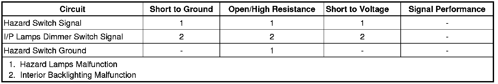

Hazard Lamps Malfunction
Hazard Lamps Malfunction
Diagnostic Instructions
* Perform the Diagnostic System Check - Vehicle (Initial Inspection and Diagnostic Overview) prior to using this diagnostic procedure.
* Review Strategy Based Diagnosis (Initial Inspection and Diagnostic Overview) for an overview of the diagnostic approach.
* Diagnostic Procedure Instructions (Initial Inspection and Diagnostic Overview)provides an overview of each diagnostic category.
Diagnostic Fault Information

Circuit/System Description
The hazard flashers may be activated in any power mode. The hazard switch is permanently grounded through G200. When the hazard switch is placed in the ON position, ground is applied through the hazard switch signal circuit to the body control module (BCM). The BCM supplies battery voltage to all four turn signal lamps in an ON and OFF duty cycle. When the hazard switch is activated, the BCM sends a GMLAN serial data message to the instrument panel cluster (IPC) requesting both turn signal indicators to be cycled ON and OFF.
Reference Information
Schematic Reference
Exterior Lights Schematics (Exterior Lights Schematics)
Connector End View Reference
Component Connector End Views (Connector Views)
Description and Operation
Exterior Lighting Systems Description and Operation (Exterior Lighting Systems Description and Operation)
Electrical Information Reference
* Circuit Testing (Component Tests and General Diagnostics)
* Connector Repairs (Component Tests and General Diagnostics)
* Testing for Intermittent Conditions and Poor Connections (Component Tests and General Diagnostics)
* Wiring Repairs (Component Tests and General Diagnostics)
Scan Tool Reference
Control Module References (Programming and Relearning)
Circuit/System Testing
Hazard Lamps Malfunction
1. Ignition OFF, disconnect the harness connector at the hazard switch.
2. Ignition OFF, verify that a test lamp illuminates between B+ and the ground circuit terminal A.
• If the test lamp does not illuminate, test the ground circuit for an open/high resistance.
3. Ignition ON, verify the scan tool hazard lamp switch parameter is INACTIVE.
• If not the specified value, test the signal circuit terminal D for a short to ground. If the circuit tests normal, replace the BCM.
4. Install a 3A fused jumper wire between the signal circuit terminal D and ground. Verify the scan tool hazard lamp switch parameter is ACTIVE.
• If not the specified value, test the signal circuit terminal D for a short to voltage or an open/high resistance. If the circuit tests normal, replace the BCM.
5. If all circuits test normal, test or replace the hazard switch.
Hazard Lamp Indicators Malfunction
Ignition ON, with a scan tool perform the display test for the instrument panel cluster (IPC) and observe both turn signal indicators.
If both turn signal indicators illuminate during the test, replace the BCM.
If both turn signal indicators do not illuminate during the test or remain illuminated at all times, replace the IPC.
Repair Instructions
Perform the Diagnostic Repair Verification (Verification Tests) after completing the diagnostic procedure.
* Hazard Warning Switch Replacement (Left Hand Drive) (Hazard Warning Switch Replacement (Left Hand Drive))Hazard Warning Switch Replacement (Right Hand Drive) (Hazard Warning Switch Replacement (Right Hand Drive))
* Control Module References (Programming and Relearning)for BCM or IPC replacement, setup, and programming